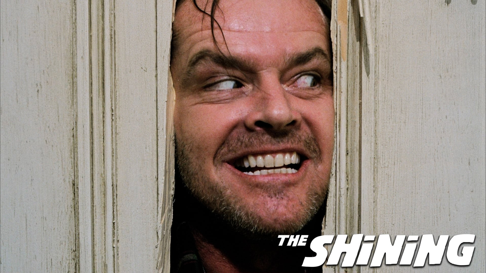
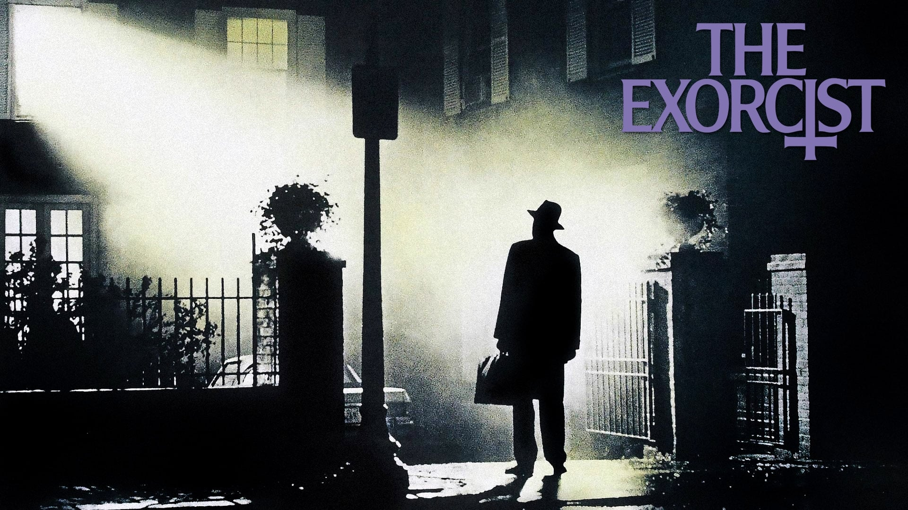
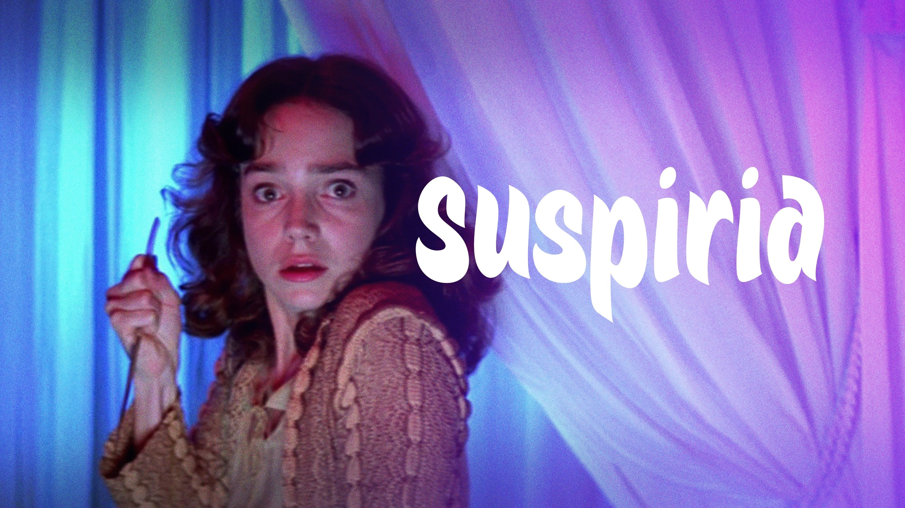
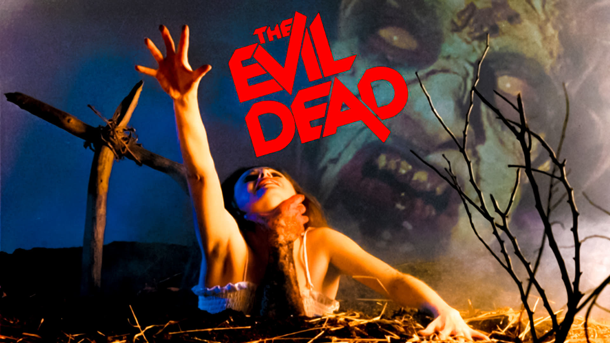
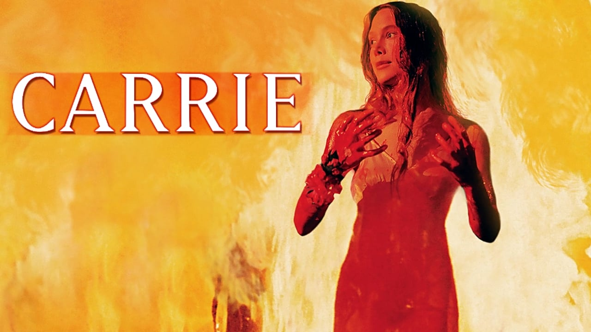
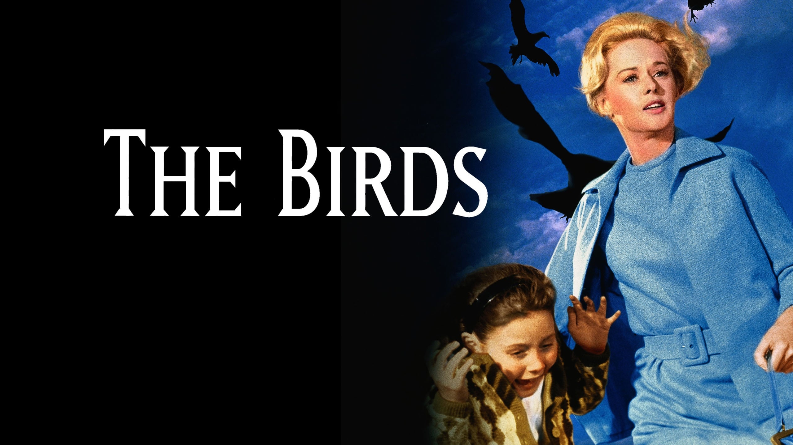
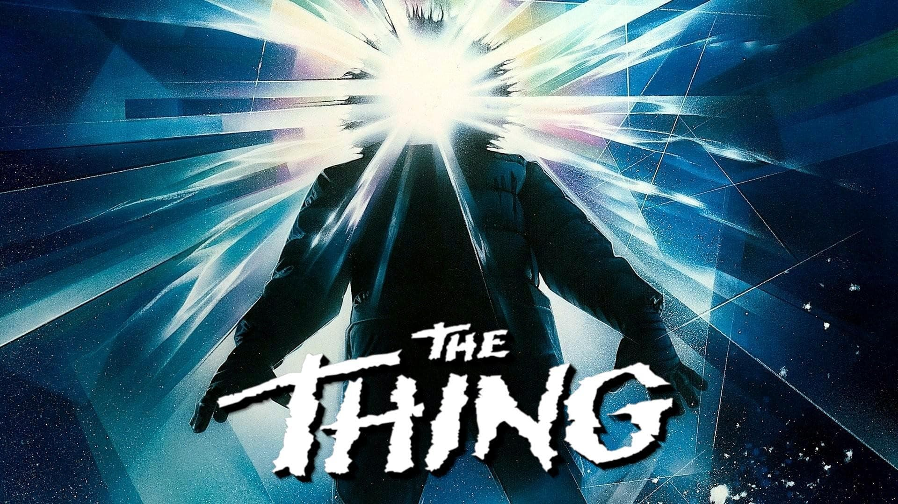
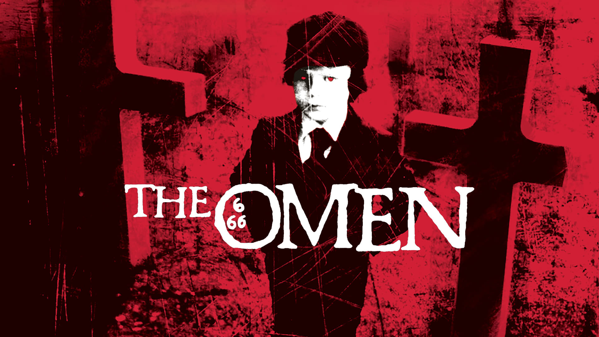

El resplandor (1980)
Jack Torrance se traslada, junto a su mujer y a su hijo, al impresionante hotel Overlook, en Colorado, para
encargarse del mantenimiento del mismo durante la temporada invernal, en la que permanece cerrado y aislado
por la nieves...
Ver Tráiler
La semilla del diablo (1968)
Una joven pareja, Rosemary y Guy, se muda a un infame edificio de apartamentos de Nueva York, conocido por
aterradoras leyendas y misteriosos sucesos, con el propósito de formar una familia...
Ver Tráiler

Psicosis (1960)
Una joven secretaria, tras cometer un robo, se marcha de la ciudad y conduce durante horas, parando para
descansar en un pequeño motel de carretera regentado por un joven llamado Norman. Todo parece normal y
tranquilo en el apartado...
Ver Tráiler

El exorcista (1973)
Regan es una niña de doce años víctima de fenómenos paranormales como la levitación o la manifestación de
una fuerza sobrehumana. Su madre, aterrorizada, tras someter a su hija a múltiples análisis médicos que no
ofrecen...
Ver Tráiler

El exorcista (1973)
Regan es una niña de doce años víctima de fenómenos paranormales como la levitación o la manifestación de
una fuerza sobrehumana. Su madre, aterrorizada, tras someter a su hija a múltiples análisis médicos que no
ofrecen...
Ver Tráiler

Posesión infernal (1981)
Cinco chicos van a pasar el fin de semana a una cabaña perdida en un espeso bosque en las montañas de
Tennessee. Una vez instalados, y cuando se encuentran cenando, la trampilla que da acceso al sótano se abre
de golpe...
Ver Tráiler

Carrie (1976)
Carrie es una torturada estudiante de secundaria que no encaja en su entorno, sin confianza en sí misma y
sin amigos... y sin ser consciente de la amplitud de sus poderes telquinéticos. Pero cuando su psicótica
madre...
Ver Tráiler

Los pájaros (1963)
Melanie, una joven rica y snob de la alta sociedad de San Francisco, conoce casualmente en una pajarería al
abogado Mitch Brenner, que ha ido a comprar un regalo de cumpleaños para Kathy, su hermana pequeña...
Ver Tráiler

La cosa(1982)
En una estación experimental de la Antártida, un equipo de investigadores descubre a un ente extraño venido
del espacio, que según todos los indicios ha permanecido enterrado en la nieve durante más de 100.000
años...
Ver Tráiler
El fotógrafo del pánico (1960)
Böhm interpreta a psicópata que fotografía a sus víctimas mientras mueren; es un hombre profundamente
perturbado, cuyo desequilibrio hunde sus raíces en la infancia. Su padre, un científico obsesionado por
estudiar las reacciones...
Ver Tráiler
La matanza de Texas (1974)
Cinco adolescentes visitan la tumba, supuestamente profanada, del abuelo de uno de ellos. Cuando llegan al
lugar, donde hay un siniestro matadero, toman una deliciosa carne en una gasolinera. A partir de ese
momento...
Ver Tráiler

La profecía (1976)
Cuando Kathy Thorn da a luz a un bebé muerto, su esposo Robert le oculta la verdad y sustituye a su hijo
por un niño huérfano, ignorando su origen satánico. El horror empieza cuando, en el quinto cumpleaños de
Damien...
Ver Tráiler